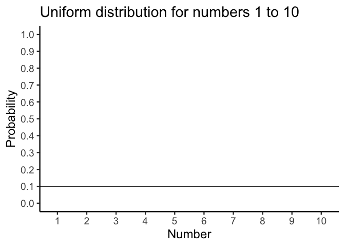
5 Foundations for inference
Data and data sets are not objective; they are creations of human design. We give numbers their voice, draw inferences from them, and define their meaning through our interpretations. —Katie Crawford
Inferential statistics is the branch of statistics concerned with drawing conclusions about populations or causal relationships from sample data. It provides the tools to answer questions like: did our manipulation actually cause a change, or could the pattern we observed have arisen by random chance alone?
This chapter builds the conceptual foundations for inference using simulation — no formulas yet. The goal is to make the underlying logic explicit and visible before it gets formalized in later chapters.
5.1 Brief review of Experiments
A controlled experiment is a structured method of data collection designed to support inferences about causality. In environmental science, experiments involve deliberately manipulating one condition while holding others constant, then measuring the response.
Every experiment has two core components. The independent variable is the condition under experimental control — the manipulation. The dependent variable is what is measured. For example, a researcher studying the effects of wastewater discharge on stream health might compare dissolved oxygen levels at sites downstream of a discharge point against levels at unaffected reference sites. Distance from discharge (affected vs. reference) is the independent variable; dissolved oxygen is the dependent variable.
Causal forces produce detectable change. If the discharge is genuinely reducing dissolved oxygen, then measurements from affected sites should differ systematically from measurements at reference sites. The experiment is designed to detect that change.
The central question becomes: how do we know if a measured difference between conditions reflects a real causal effect? The short answer is that data always contain variability — measurements fluctuate even when nothing has changed. To decide whether a difference is real, we need tools that can distinguish meaningful change from background noise.
5.2 The data came from a distribution
Understanding where data come from is foundational to inference. This section returns to sampling and distributions from that perspective — not just to describe them, but to ask what they reveal about the process that generated our observations.
A distribution specifies what numbers are likely to occur and how often. It sets the constraints on what we can expect to see when we take measurements. Distributions are abstract, but they can be visualized directly with histograms.
5.2.1 Uniform distribution
As a reminder from last chapter, Figure 5.1 shows that the shape of a uniform distribution is completely flat.
The y-axis shows probability (0 to 1) and the x-axis shows the values 1 through 10. The flat horizontal line indicates that every value from 1 to 10 has an equal probability of occurring: 1/10 = 0.1. This is the defining property of a uniform distribution — no value is more likely than any other.
Think of the uniform distribution as a number-generating process. If it generates numbers repeatedly, it produces each value with equal frequency: roughly 10% 1s, 10% 2s, and so on. Table 5.1 shows 100 numbers sampled from this distribution.
| 1 | 3 | 10 | 8 | 7 | 10 | 7 | 4 | 3 | 6 |
| 9 | 4 | 3 | 9 | 1 | 7 | 1 | 3 | 3 | 9 |
| 7 | 7 | 4 | 6 | 7 | 6 | 8 | 10 | 7 | 9 |
| 1 | 5 | 2 | 7 | 5 | 9 | 4 | 6 | 3 | 7 |
| 6 | 4 | 10 | 7 | 6 | 8 | 9 | 5 | 4 | 6 |
| 6 | 6 | 5 | 2 | 6 | 7 | 3 | 8 | 3 | 1 |
| 2 | 3 | 2 | 6 | 7 | 5 | 4 | 4 | 4 | 8 |
| 9 | 2 | 5 | 3 | 9 | 5 | 8 | 7 | 4 | 2 |
| 7 | 3 | 2 | 2 | 3 | 1 | 6 | 7 | 4 | 9 |
| 5 | 10 | 7 | 1 | 9 | 9 | 8 | 8 | 9 | 10 |
We used the uniform distribution to generate these numbers. Formally, this is called sampling from a distribution. Drawing a subset of observations from a larger process or population is sampling; if you could observe every possible value the process could produce, you would have the population. We will return to the distinction between samples and populations throughout the course.
Because we used the uniform distribution to create numbers, we already know where our numbers came from. However, we can still pretend for the moment that someone showed up at your door, showed you these numbers, and then you wondered where they came from. Can you tell just by looking at these numbers that they came from a uniform distribution? What would need to look at? Perhaps you would want to know if all of the numbers occur with roughly equal frequency, after all they should have right? That is, if each number had the same chance of occurring, we should see that each number occurs roughly the same number of times.
We already know what a histogram is, so we can put our sample of 100 numbers into a histogram and see what the counts look like. If all of the numbers from 1 to 10 occur with equal frequency, then each individual number should occur about 10 times. Figure 5.2 shows the histogram:
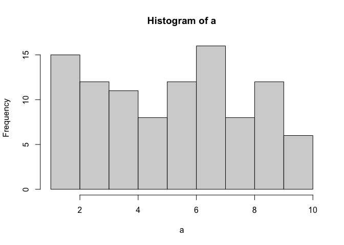
As the histogram shows, not all numbers occurred exactly 10 times. The bars vary in height even though all values had equal probability. This is a direct illustration of sampling variability: random samples do not perfectly reproduce the distribution they came from. The discrepancy between what we observe and what the distribution predicts is called sampling error.
5.2.2 Not all samples are the same, they are usually quite different
Let’s look at sampling error more closely. We will sample 20 numbers from the uniform distribution. We should expect that each number between 1 and 10 occurs about two times each. As before, this expectation can be visualized in a histogram. To get a better sense of sampling error, let’s repeat the above process ten times. Figure 5.3 has 10 histograms, each showing what 10 different samples of twenty numbers looks like:
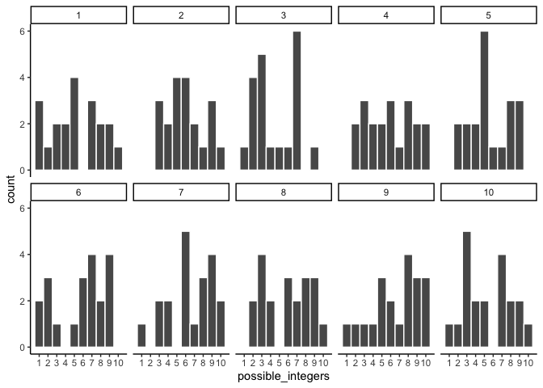
You might notice right away that none of the histograms are the same. Even though we are randomly taking 20 numbers from the very same uniform distribution, each sample of 20 numbers comes out different. This is sampling variability, or sampling error.
Figure 5.4 shows an animated version of the process of repeatedly choosing 20 new random numbers and plotting a histogram. The horizontal line shows the flat-line shape of the uniform distribution. The line crosses the y-axis at 2; and, we expect that each number (from 1 to 10) should occur about 2 times each in a sample of 20. However, each sample bounces around quite a bit, due to random chance.
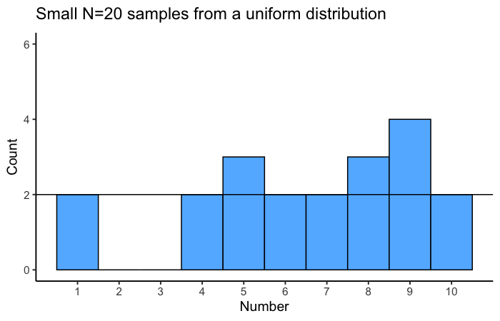
Small samples show high variability because random chance can produce very uneven counts even when every value is equally likely. This variability is sampling error, and it makes it harder to identify the true distribution from a single sample.
5.2.3 Large samples are more like the distribution they came from
Let’s refresh the question. Which of the two samples in Figure 5.5 do you think came from a uniform distribution?
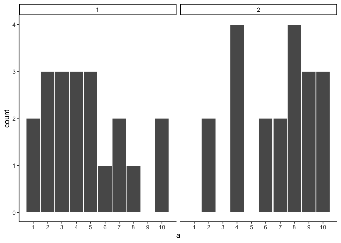
Both samples came from the uniform distribution — yet neither histogram looks perfectly flat. This illustrates how sampling error can obscure the true distribution, especially at small sample sizes.
Can we improve things, and make it easier to see if a sample came from a uniform distribution? Yes, we can. All we need to do is increase the sample-size. We will often use the letter n to refer to sample-size. N is the number of observations in the sample.
So let’s increase the number of observations in each sample from 20 to 100. We will again create 10 samples (each with 100 observations), and make histograms for each of them. All of these samples will be drawn from the very same uniform distribution. This, means we should expect each number from 1 to 10 to occur about 10 times in each sample. The histograms are shown in Figure 5.6.
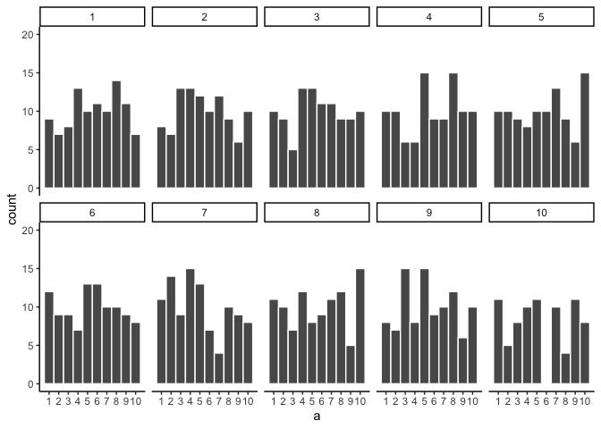
Again, most of these histograms don’t look very flat, and all of the bars seem to be going up or down, and they are not exactly at 10 each. So, we are still dealing with sampling error. It’s a pain. It’s always there.
Let’s bump up the \(N\) from 100 to 1000 observations per sample. Now we should expect every number to appear about 100 times each. What happens?
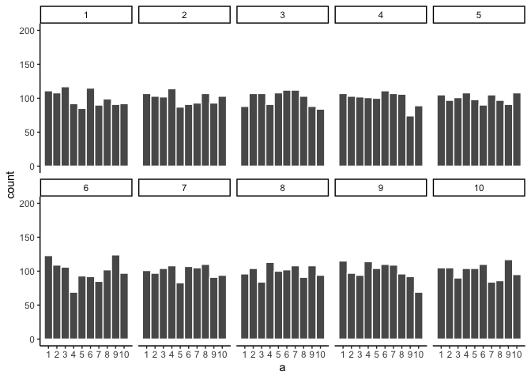
Figure 5.7 shows the histograms are starting to flatten out. The bars are still not perfectly at 100, because there is still sampling error (there always will be). But, if you found a histogram that looked flat and knew that the sample contained many observations, you might be more confident that those numbers came from a uniform distribution.
Just for fun let’s make the samples really big. Say 100,000 observations per sample. Here, we should expect that each number occurs about 10,000 times each. What happens?
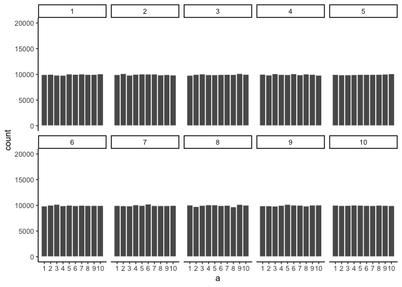
Figure 5.8 shows that the histograms for each sample are starting to look the same. They all have 100,000 observations, and this gives chance enough opportunity to equally distribute the numbers, roughly making sure that they all occur very close to the same amount of times. As you can see, the bars are all very close to 10,000, which is where they should be if the sample came from a uniform distribution.
Pro tip
The pattern behind a sample will tend to stabilize as sample-size increases. Small samples will have all sorts of patterns because of sampling error (chance).
Before getting back to the topic of experiments that we started with, let’s ask two more questions. First, which of the two samples in Figure 5.9 do you think came from a uniform distribution? FYI, each of these samples had 20 observations each.
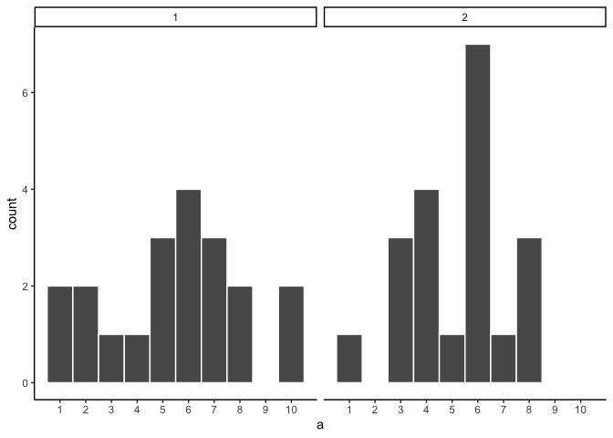
If you are not confident in the answer, this is because sampling error (randomness) is fuzzing with the histograms.
Here is the very same question, only this time we will take 1,000 observations for each sample. Which histogram in Figure 5.10 do you think came from a uniform distribution, which one did not?
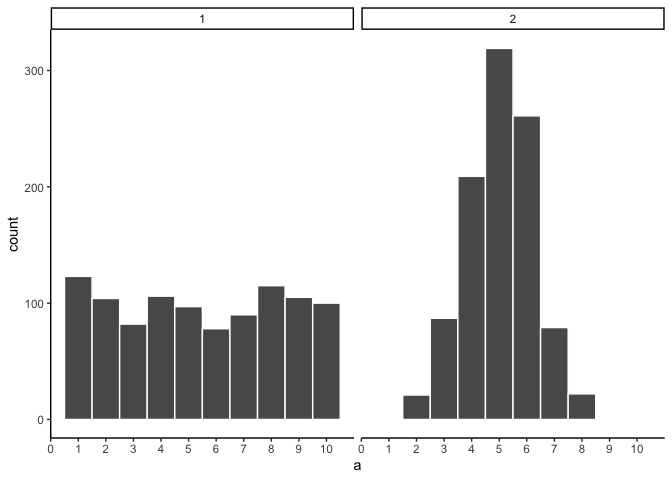
Now that we have increased N, we can see the pattern in each sample becomes more obvious. The histogram for sample 1 has bars near 100, not perfectly flat, but it resembles a uniform distribution. The histogram for sample 2 is not flat looking at all.
By comparing the two histograms, we have already performed a basic statistical inference — we inferred that sample 2 did not come from a uniform distribution. This is the same logic underlying the formal tests covered in later chapters: arrange the data to make the source distribution visible, then judge whether the observed pattern is consistent with a hypothesized one.
5.3 Is there a difference?
Let’s get back to experiments. In an experiment we want to know if an independent variable (our manipulation) causes a change in a dependent variable (measurement). If this occurs, then we will expect to see some differences in our measurement as a function of the manipulation.
Consider the light switch example:
Light Switch Experiment: You manipulate the switch up (condition 1 of independent variable), light goes on (measurement). You manipulate the switch down (condition 2 of independent variable), light goes off (another measurement). The measurement (light) changes (goes off and on) as a function of the manipulation (moving switch up or down).
You can see the change in measurement between the conditions, it is as obvious as night and day. So, when you conduct a manipulation, and can see the difference (change) in your measure, you can be pretty confident that your manipulation is causing the change.
note: to be cautious we can say “something” about your manipulation is causing the change, it might not be what you think it is if your manipulation is very complicated and involves lots of moving parts.
5.3.1 Chance can produce differences
Random chance can produce apparent differences between groups even when no real difference exists. We have already seen this with sampling: two samples from the same distribution come out differently. The same principle applies when we compare group means. This is a fundamental problem for inference.
To make this concrete, consider a scenario where we expect to find no real difference. A researcher samples pH at 10 randomly selected sites from a stream network. All 10 sites are drawn from the same population — there is no treatment, no environmental gradient, no systematic difference between them. The sites are arbitrarily divided into two groups of 5 (Group A and Group B). Even though there is no real difference, we might still observe a difference in mean pH between the two groups simply because of sampling error.
Here is data from one run of this scenario:
| group | ph |
|---|---|
| A | 5.88 |
| A | 7.54 |
| A | 6.21 |
| A | 7.42 |
| A | 7.05 |
| B | 7.45 |
| B | 7.24 |
| B | 6.81 |
| B | 7.88 |
| B | 6.85 |
This is a long-format table. Each row is one site. The first column shows the group assignment, and the second shows the pH reading. Did Group A have a higher mean pH than Group B?
It is easier to see the comparison in a bar graph (Figure 5.11), which shows the mean pH for each group.
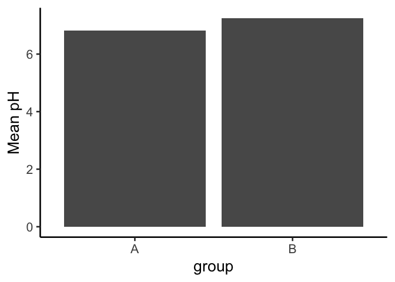
The bars are not the same height. Group A and Group B have different mean pH values. Does this mean there is a real environmental difference between the groups? No — both groups were drawn from the same population. The difference is an artifact of sampling error. This is the core inference problem: differences appear even when nothing real caused them. How can we tell whether an observed difference is real or just the result of chance?
5.3.2 Differences due to chance can be simulated
Just as we showed that chance can produce spurious correlations with limited reach, we can characterize exactly what chance is capable of producing in a comparison of group means. Once we know what chance typically does — and what it cannot do — we have a basis for judging whether our observed difference falls within or outside its range.
The first step is to replicate the sampling scenario many times. Figure 5.12 shows bar graphs of mean pH for Group A and Group B across 10 replications of the same experiment — all 10 sites sampled from the same population, split 5+5, and means computed.
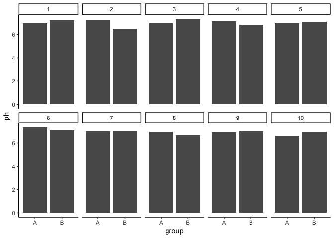
These 10 replications show that chance produces different mean differences each time. Sometimes Group A is higher, sometimes Group B is higher, sometimes the means are nearly equal. All of this variation arises from sampling error alone — there is no real difference in the population.
5.4 Chance makes some differences more likely than others
We have seen that chance can produce group mean differences. But we still need to characterize what chance usually does and what it rarely does. If we can establish the range of differences that chance produces, we can build a window: differences inside the window could plausibly have arisen by chance; differences outside the window could not.
We summarize each replication as a single difference score: mean pH for Group A minus mean pH for Group B. Figure 5.13 shows those difference scores for the 10 replications above.
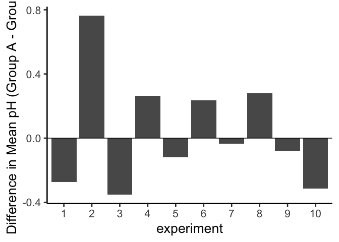
A bar at zero means the two groups had the same mean pH in that replication. Positive values indicate Group A was higher; negative values indicate Group B was higher. The signs of the differences would flip if we reversed the subtraction order.
The differences in these 10 replications mostly fall in a narrow range. To better characterize what chance can do, we run 100 replications. The results are shown in Figure 5.14.
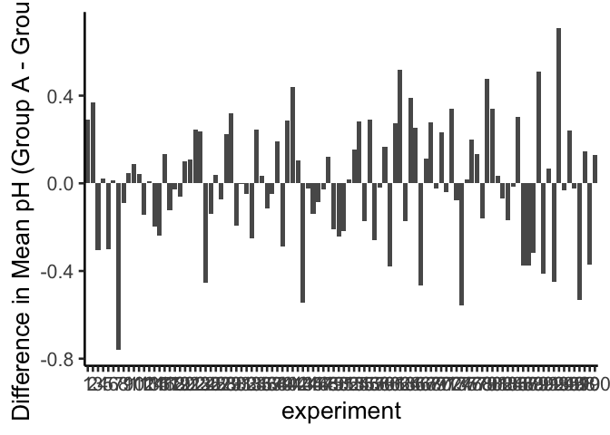
The x-axis spans 100 experiments and is difficult to read, but the important information is on the y-axis. Many different difference sizes occur, but the range is bounded — very large differences (say, greater than 0.5 pH units in either direction) do not appear. This begins to define the window of what chance can produce.
To get a clearer picture, we now run 10,000 replications and plot the distribution of difference scores as a histogram. This gives a precise view of which differences happen often and which are extremely rare.
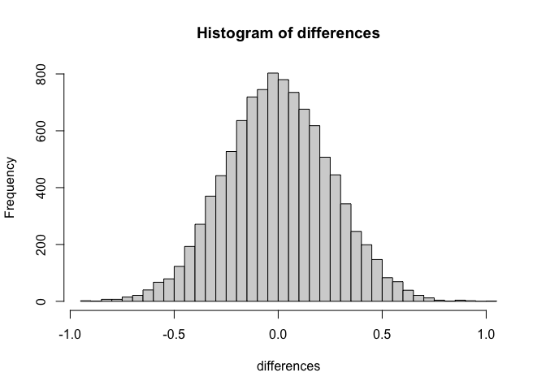
This histogram is the chance window for this study design. It shows that chance most often produces a difference near zero — that is the tallest bar in the center. Larger differences in either direction occur less and less frequently. The distribution has a clear boundary: extreme differences are possible but very rare.
We can use this window to evaluate any observed difference. If a study found a mean pH difference of 0.1 between two groups, that falls well inside the chance window — differences of that size occur frequently by random sampling alone. If the study found a difference of 0.6, that would fall far outside the window; chance produced a difference that large 0 times out of 10,000. When an observed result almost never happens by chance, we have grounds to conclude that something other than chance produced it.
5.5 Simulation-Based Inference
We are going to be doing a lot of inference throughout the rest of this course. Pretty much all of it will come down to one question. Did chance produce the differences in my data? We will be talking about experiments mostly, and in experiments we want to know if our manipulation caused a difference in our measurement. But, we measure things that have natural variability, so every time we measure things we will always find a difference. We want to know if the difference we found (between our experimental conditions) could have been produced by chance. If chance is a very unlikely explanation of our observed difference, we will make the inference that chance did not produce the difference, and that something about our experimental manipulation did produce the difference. This is it (for this textbook).
Note
Statistics is not only about determining whether chance could have produced a pattern in the observed data. The same tools we are talking about here can be generalized to ask whether any kind of distribution could have produced the differences. This allows comparisons between different models of the data, to see which one was the most likely, rather than just rejecting the unlikely ones (e.g., chance). But, we’ll leave those advanced topics for another textbook.
The simulation-based approach introduced here answers the same question as every formal test in later chapters: could chance alone have produced the observed difference? The advantage of starting here is transparency — every step is explicit and the logic is visible before any formulas are introduced.
5.5.1 Intuitive methods
The approach in this section uses only simple arithmetic operations that you already understand to build a tool for inference. Specifically, we will use:
- Sampling numbers randomly from a distribution
- Adding and subtracting
- Division, to find the mean
- Counting
- Graphing and drawing lines
- NO FORMULAS
5.5.2 Part 1: Frequency-based intuition about occurrence
Question: How many times does something need to happen for it to happen “a lot”? How rare does something need to be before you stop worrying about it?
Environmental scientists already have a working vocabulary for this: the 100-year flood. A “100-year flood” doesn’t mean floods that size happen once a century on a schedule — it means, in any given year, there’s about a 1-in-100 chance of a flood that severe. Would you build a house in that floodplain? Many people do, and often regret it, because a 1% annual chance still adds up over a 30-year mortgage (roughly a 26% chance of at least one such flood in that span). Now compare that to a location with a 1-in-10,000 annual flood risk — over the same 30 years, the cumulative chance is under 0.3%. Same underlying logic, wildly different practical decisions.
That’s the intuition we need going forward: rare events still happen, but how rare something is changes what you’re willing to conclude from seeing it. Later in this chapter, we’ll use 1-in-10,000 as our own working definition of “rare enough to call surprising.”
5.5.3 Part 2: Judgment and Decision-making
We already have everything we need to make this concrete — the pH simulation above gave us 10,000 mean differences that chance alone can produce when there is no real difference between groups. That histogram (Figure 5.15) is our reference distribution. Now we use it to make a decision.
Let’s draw some lines on that same histogram and label two kinds of regions:
- Region of chance. Chance did it. Chance could have done it.
- Region of not chance. Chance didn’t do it. Chance couldn’t have done it.
The boundaries are the minimum and maximum values chance actually produced across the 10,000 replications. Figure 5.16 shows this applied to our pH differences.
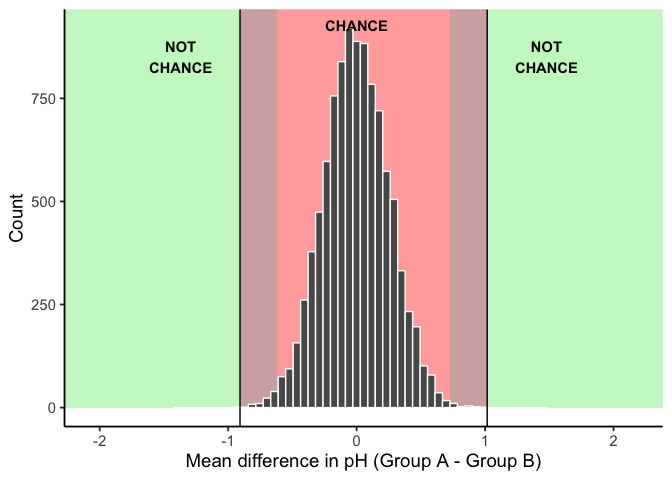
Here’s how the decision works. A pH difference beyond the green boundary (roughly -0.91 to 1.02, from our 10,000 simulated replications) never happened by chance in this simulation — if you observed something out there, you’d have real grounds to suspect it wasn’t just sampling error. A difference well inside the red zone, close to 0, is exactly what chance produces routinely — no grounds for suspicion.
The grey bands are the honest part: differences near the edge of what chance can do, but not quite past it. Chance could produce something in the grey zone — it’s technically still inside the red window — but it does so rarely. That’s not a clean yes/no. It’s a “probably not chance, but I can’t rule it out,” and how you handle that ambiguity is a judgment call, not a fact. More conservative researchers shrink the grey zone (fewer false alarms, more missed real effects); more permissive researchers expand it (the reverse trade-off). Chapter 6 formalizes this trade-off with a standard convention (\(\alpha = .05\)) so that researchers aren’t each inventing their own boundary from scratch.
5.5.3.1 Making decisions and being wrong
No matter how you plan to make decisions about your data, you will always be prone to making some mistakes. You might call one finding real, when in fact it was caused by chance. This is called a type I error, or a false positive. You might ignore one finding, calling it chance, when in fact it wasn’t chance (even though it was in the window). This is called a type II error, or a false negative.
How you make decisions can influence how often you make errors over time. If you are a researcher, you will run lots of experiments, and you will make some amount of mistakes over time. If you do something like the very strict method of only accepting results as real when they are in the “no chance” zone, then you won’t make many type I errors. Pretty much all of your result will be real. But, you’ll also make type II errors, because you will miss things real things that your decision criteria says are due to chance. The opposite also holds. If you are willing to be more liberal, and accept results in the grey as real, then you will make more type I errors, but you won’t make as many type II errors. Under the decision strategy of using these cutoff regions for decision-making there is a necessary trade-off. The Bayesian view get’s around this a little bit. Bayesians talk about updating their beliefs and confidence over time. In that view, all you ever have is some level of confidence about whether something is real, and by running more experiments you can increase or decrease your level of confidence. This, in some fashion, avoids some trade-off between type I and type II errors.
Regardless, there is another way to reduce type I and type II errors, and to increase your confidence in your results, even before you do the experiment. It’s called “knowing how to design a good experiment”.
5.5.4 Part 3: Study Design and Sensitivity
Study design directly controls how sensitive an analysis is. It’s often possible — and important — to choose a design that can actually detect the size of effect you care about.
Two forces govern whether a study can detect a real effect: the size of the effect, and the amount of noise in the data. The main design choice under your control is sample size, which determines how much that noise obscures the signal.
Recall what happens to the sampling distribution of the mean as sample size increases: it narrows. The same is true for the distribution of mean differences. As \(n\) increases, the range of differences that chance alone produces shrinks. This means that with enough sites or plots, even a small real effect can be reliably distinguished from noise — while with too few, even a fairly large real effect can get lost in it.
Let’s return to the stream pH scenario, but now vary the number of sites sampled per group: 5 (what we started with), 10, 20, and 40.
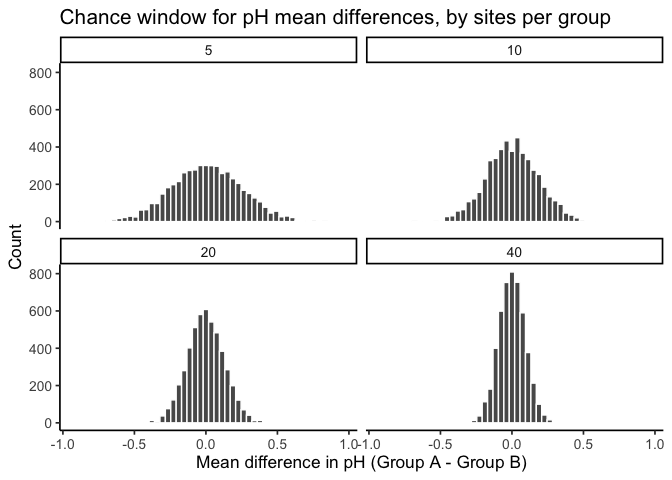
| sample_size | smallest | largest |
|---|---|---|
| 5 | -0.91 | 0.94 |
| 10 | -0.73 | 0.65 |
| 20 | -0.49 | 0.49 |
| 40 | -0.32 | 0.28 |
The pattern is clear: the chance window is wide with only 5 sites per group and narrows steadily as sites are added. Consider what this means for a real study. Suppose restoration of a wetland is expected to raise pH by about 0.3 units. With only 5 sites per group, that effect size sits well inside the chance window in the table above — a real 0.3-unit effect could easily be mistaken for sampling noise, or a sampling-noise result could be mistaken for a real effect. With 40 sites per group, the same 0.3-unit difference sits outside the window chance can produce, and you could detect it with real confidence.
The design of a study determines the size of effect it can reliably detect. Sample size is the main lever, but not the only one — taking repeated measurements at each site (reducing measurement noise) and choosing conditions with a genuinely strong contrast both help too. This idea — how sensitive is a given design to a real effect of a given size — has a name, statistical power, which Chapter 6 develops formally alongside the standard \(\alpha = .05\) convention.
5.5.5 Summary of Simulation-Based Inference
We built the core logic of inference using nothing but sampling, arithmetic, and histograms: simulate what chance alone can produce, compare an observed result to that simulated distribution, and use where it falls to judge whether chance is a plausible explanation. We also saw that this comparison isn’t perfectly clean — there’s a grey zone near the edges where judgment, not a formula, has to do the work — and that the width of the chance window itself depends on how much data you collect.
5.6 The randomization test (permutation test)
Welcome to the first official inferential statistic in this textbook. Up till now we have been building some intuitions for you. Next, we will get slightly more formal and show you how we can use random chance to tell us whether our experimental finding was likely due to chance or not. We do this with something called a randomization test. The ideas behind the randomization test are the very same ideas behind the rest of the inferential statistics that we will talk about in later chapters. And, surprise, we have already talked about all of the major ideas already. Now, we will just put the ideas together, and give them the name randomization test.
Here’s the big idea. When you run an experiment and collect some data you get to find out what happened that one time. But, because you ran the experiment only once, you don’t get to find out what could have happened. The randomization test is a way of finding out what could have happened. And, once you know that, you can compare what did happen in your experiment, with what could have happened.
5.6.1 Pretend example: does distance from a highway affect NO₂ levels?
Let’s say you are monitoring nitrogen dioxide (NO₂) concentrations at air quality sites near a major highway. You assign 20 monitoring sites to a “near” group (within 50 m of the highway) and 20 different sites to a “far” group (500 m or more from the highway). If highway traffic is a meaningful source of NO₂, then the near group should have higher concentrations on average than the far group.
Let’s say the data looked like this:
| site | near_ppb | far_ppb |
|---|---|---|
| 1 | 42 | 16 |
| 2 | 38 | 32 |
| 3 | 37 | 29 |
| 4 | 63 | 37 |
| 5 | 44 | 13 |
| 6 | 37 | 22 |
| 7 | 45 | 37 |
| 8 | 62 | 20 |
| 9 | 43 | 31 |
| 10 | 52 | 31 |
| 11 | 50 | 21 |
| 12 | 50 | 25 |
| 13 | 36 | 11 |
| 14 | 64 | 18 |
| 15 | 57 | 31 |
| 16 | 36 | 19 |
| 17 | 58 | 15 |
| 18 | 54 | 28 |
| 19 | 51 | 33 |
| 20 | 45 | 10 |
| Sums | 964 | 479 |
| Means | 48.2 | 23.95 |
So, did the near-highway sites have higher NO₂ than the far sites? Look at the mean concentrations at the bottom of the table. The mean for near sites was 48.2 ppb, and the mean for far sites was 23.95 ppb. Just looking at the means, it looks like proximity to the highway matters!
“But wait — could this just be chance?” Even if this were real data, you might wonder: maybe the near sites just happened to be in a windier or more industrialized area, so their higher readings reflect those conditions rather than the highway itself. Or maybe the difference between the groups happened simply because of random sampling variation. We agree this is a legitimate concern. Let’s take a closer look. We already know how the data came out. What we want to know is how they could have come out — what are all the possibilities?
For example, the data would have come out a bit different if some of the sites from the near group had been placed in the far group, and vice versa. Think of all the ways you could have assigned the 40 sites to two groups — there are lots of ways. And, the means for each group would turn out differently depending on how the sites are assigned.
Practically speaking, it’s not possible to run the experiment every possible way, that would take too long. But, we can nevertheless estimate how all of those experiments might have turned out using simulation.
We take all 40 NO₂ readings from both groups and pool them together. Then we randomly assign 20 to a ‘near’ group and 20 to a ‘far’ group — as if the original assignment had been done differently. We compute the new group means and their difference. We repeat this process many times to build up a picture of what the difference could have been under random assignment.
5.6.1.1 Doing the randomization
Before we do that, let’s show how the randomization part works. We’ll use fewer numbers to make the process easier to look at. Here are the first 5 NO₂ readings from each group.
| site | near_ppb | far_ppb |
|---|---|---|
| 1 | 42 | 16 |
| 2 | 38 | 32 |
| 3 | 37 | 29 |
| 4 | 63 | 37 |
| 5 | 44 | 13 |
| Sums | 224 | 127 |
| Means | 44.8 | 25.4 |
Things could have turned out differently if some of the near-highway sites had been placed in the far group instead, and vice versa. Here’s how we can do some random switching using R.
all_readings <- c(near[1:5], far[1:5])
randomize_scores <- sample(all_readings)
new_near <- randomize_scores[1:5]
new_far <- randomize_scores[6:10]
print(new_near)
#> [1] 37 37 16 42 63
print(new_far)
#> [1] 38 44 29 32 13We have taken the first 5 readings from each group and put them all into a variable called all_readings. Then we use the sample function in R to shuffle the readings. Finally, we take the first 5 readings from the shuffled numbers and put them into new_near, and the last five into new_far.
If we do this a couple of times and put them in a table, we can indeed see that the means for each group would be different if the sites were shuffled around. Check it out:
| site | near_ppb | far_ppb | near2 | far2 | near3 | far3 |
|---|---|---|---|---|---|---|
| 1 | 42 | 16 | 38 | 16 | 37 | 16 |
| 2 | 38 | 32 | 29 | 42 | 42 | 38 |
| 3 | 37 | 29 | 63 | 37 | 63 | 44 |
| 4 | 63 | 37 | 37 | 13 | 37 | 32 |
| 5 | 44 | 13 | 44 | 32 | 13 | 29 |
| Sums | 224 | 127 | 211 | 140 | 192 | 159 |
| Means | 44.8 | 25.4 | 42.2 | 28 | 38.4 | 31.8 |
5.6.1.2 Simulating the mean differences across the different randomizations
In our pretend study we found that the mean NO₂ for near-highway sites was 48.2 ppb, and for far sites was 23.95 ppb. The mean difference (near − far) was 24.25 ppb. This is a pretty big difference. This is what did happen. But, what could have happened? If we tried out all the possible ways to assign 40 sites to two groups, what does the distribution of the possible mean differences look like? Let’s find out. This is what the randomization test is all about.
When we do our randomization test we will measure the mean difference in NO₂ between the near and far groups. Every time we randomize we will save the mean difference.
Let’s look at a short animation of what is happening in the randomization test. Figure 5.18 shows data from a different fake study, but the principles are the same. We’ll return to the NO₂ example after the animation. The animation is showing three important things. First, the purple dots show the mean values in two groups (lower-exposure vs. higher-exposure sites). It looks like there is a difference, as 1 dot is lower than the other. We want to know if chance could produce a difference this big. At the beginning of the animation, the light green and red dots show the individual readings from each of 10 sites in each group (the purple dots are the means of these original readings). Now, during the randomizations, we randomly shuffle the original readings between the groups. You can see this happening throughout the animation, as the green and red dots appear in different random combinations. The moving yellow dots show you the new means for each group after the randomization. The differences between the yellow dots show you the range of differences that chance could produce.
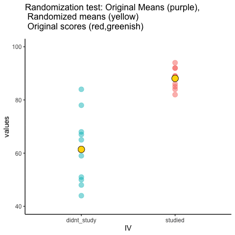
We are engaging in some visual statistical inference. By looking at the range of motion of the yellow dots, we are watching what kind of differences chance can produce. In this animation, the purple dots, representing the original difference, are generally outside of the range of chance. The yellow dots don’t move past the purple dots, as a result chance is an unlikely explanation of the difference.
If the purple dots were inside the range of the yellow dots, then when would know that chance is capable of producing the difference we observed, and that it does so fairly often. As a result, we should not conclude the manipulation caused the difference, because it could have easily occurred by chance.
Let’s return to the NO₂ example. After we randomize our readings many times and compute the new means and mean differences, we will have loads of mean differences to look at, which we can plot in a histogram. The histogram gives a picture of what could have happened. Then, we can compare what did happen with what could have happened.
Here’s the histogram of the mean differences from the randomization test. For this simulation, we randomized the results from the original study 10,000 times. This is what could have happened. The blue line in Figure 5.19 shows where the observed difference lies on the x-axis.
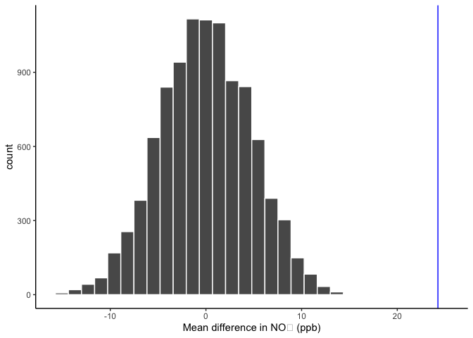
What do you think? Could the difference represented by the blue line have been caused by chance? My answer is probably not. The histogram shows us the window of chance — the range of differences that random assignment alone can produce. The blue line is not inside that window. This means we can be pretty confident that the difference we observed was not due to chance alone, and is more consistent with a real environmental effect of highway proximity on NO₂.
We are looking at another window of chance. We are seeing a histogram of the kinds of mean differences that could have occurred in our study if we had randomly assigned our 40 sites to the near and far groups differently. As you can see, the mean differences range from negative to positive. The most frequent difference is 0. The distribution appears to be symmetrical about zero. Notice that as the differences get larger (in either direction), they become less frequent. The blue line shows us the observed difference from our study. Where is it? It’s way out to the right — well outside the histogram. In other words, when we look at what could have happened by chance, we see that what did happen doesn’t occur very often by chance alone.
Important: When we speak of what could have happened, we are talking about what could have happened by chance. When we compare what did happen to what chance could have done, we can assess whether our result is likely due to chance or something real.
OK, let’s pretend we got a much smaller mean difference when we first ran the study. We can draw new lines (blue and red) to represent smaller differences we might have found.
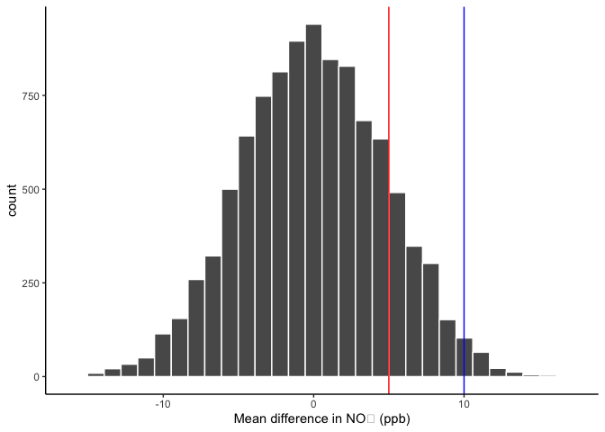
Look at the blue line in Figure 5.20. If you found a mean difference of 10 ppb, would you be convinced that this wasn’t caused by chance? As you can see, the blue line is inside the chance window — differences of +10 ppb do happen sometimes by chance. You might infer that the difference was probably not due to chance (it’s on the edge), but you’d be a little skeptical. How about the red line? The red line represents a difference of +5 ppb. If you found a difference of +5 here, would you be confident that it wasn’t caused by chance? No — the red line is well inside the chance window, and this kind of difference happens fairly often. You’d need more evidence before concluding that highway proximity was driving the difference.
5.6.2 Take homes so far
The simulation-based approach developed in this chapter illustrates the core logic of all the formal tests covered later in this course.
Inferential statistics is an attempt to solve the problem: where did my data come from? In the randomization test example, our question was: where did the differences between the means in my data come from? We know that the differences could be produced by chance alone. We simulated what chance can do using randomization. Then we plotted what chance can do using a histogram. Then, we used that picture to help us make an inference. Did our observed difference come from the chance distribution, or not? When the observed difference is clearly inside the chance distribution, then we can infer that our difference could have been produced by chance. When the observed difference is not clearly inside the chance distribution, then we can infer that our difference was probably not produced by chance.
These pictures are very, very helpful. If one of our goals is to summarize a bunch of complicated numbers and arrive at an inference, the pictures do a great job. We don’t even need a summary number — we just need to look at the picture and see if the observed difference is inside or outside of the chance window. As we move forward, the main thing we will do is formalize this process and talk more about “standard” inferential statistics. For example, rather than looking at a picture, we will create summary numbers. What if you wanted the probability that your difference could have been produced by chance? That could be a single number. If there was a 95% probability that chance could produce the difference you observed, you might not be very confident that your environmental condition was causing the difference. If there was only 1% probability that chance could produce your difference, you might be much more confident that chance did not produce it — and that your variable of interest (highway proximity, pollution source, land use type) actually matters. In order to get there, we will introduce some more foundational tools for statistical inference.
5.7 Videos
5.7.1 Null and Alternate Hypotheses
5.7.2 Types of Errors
Barnes, Mallory L. 2023. Statistics for Environmental Science.